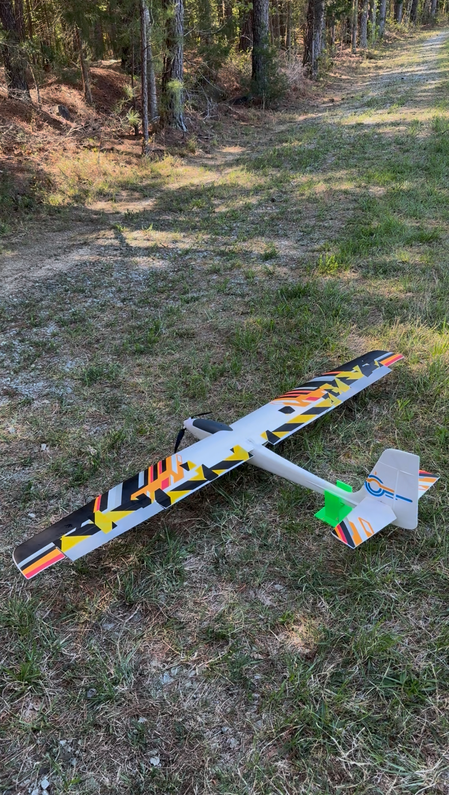
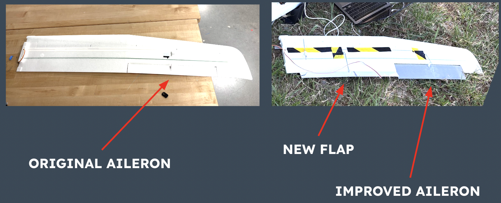
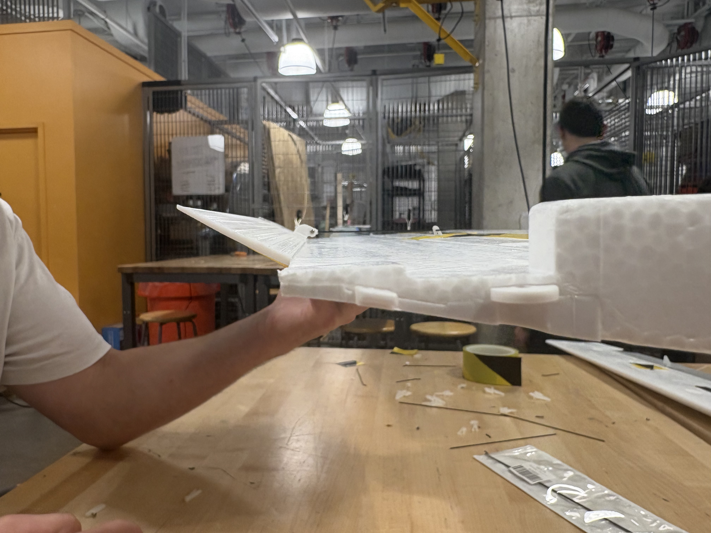
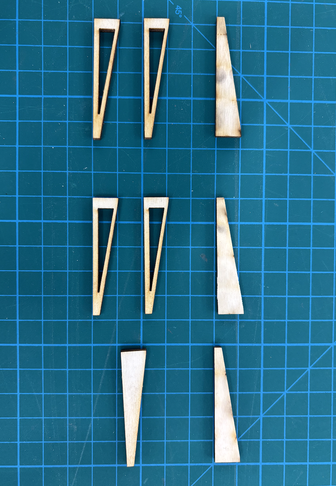
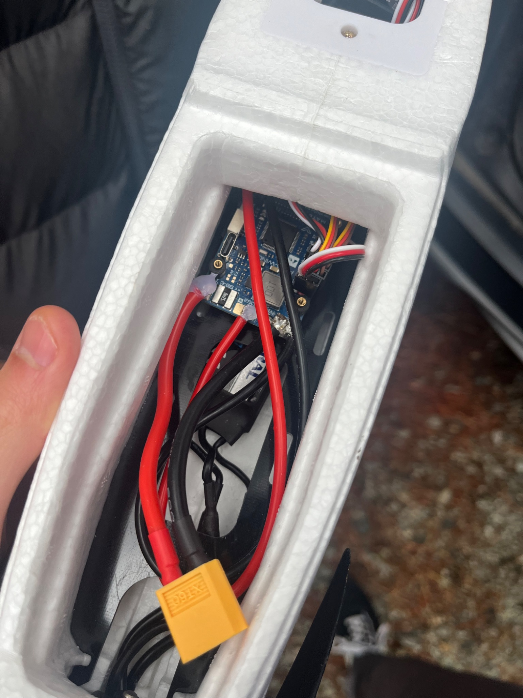
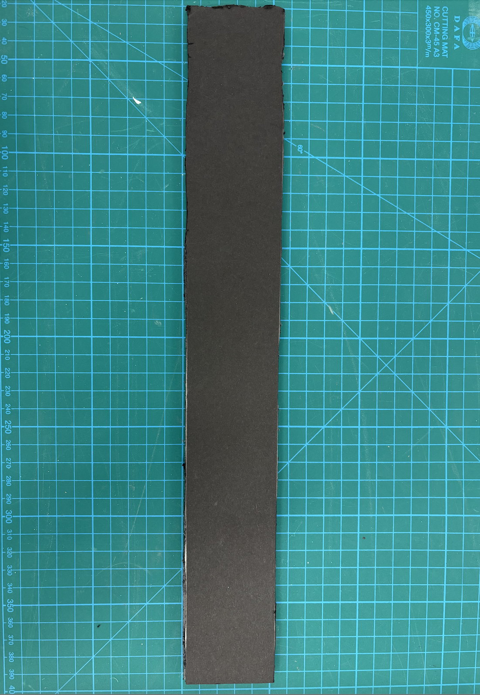
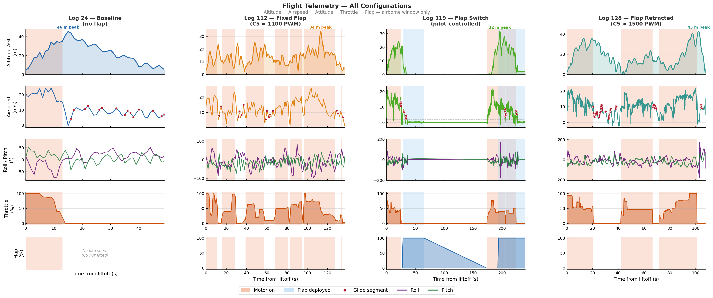
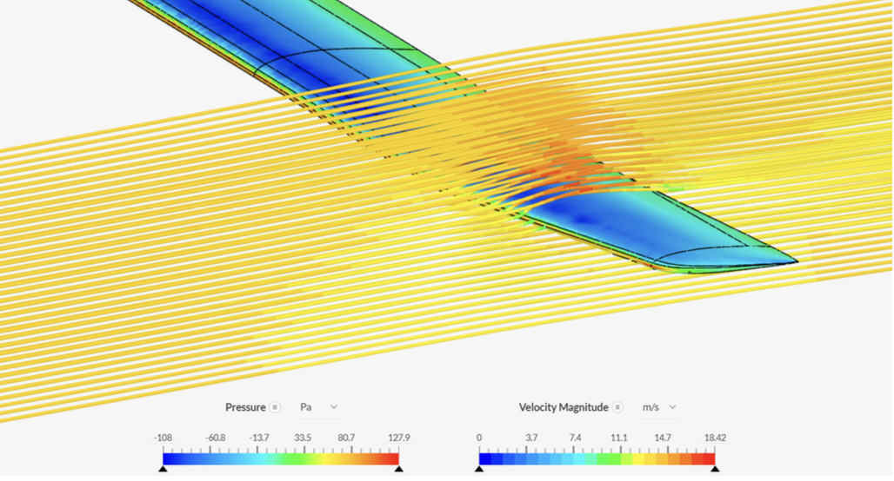

Overview
RC gliders offer an accessible and low-cost platform for aerodynamic experimentation, but their low-speed flight performance is limited by fixed-geometry wings that are not optimized for slow, efficient gliding. This project set out to address that directly: modify a commercial 2-meter RC glider with a custom trailing-edge flap and aileron system to reduce stall speed and improve glide efficiency during unpowered flight.
The client, Michimasa Fujino (founder of HondaJet), sought a solution that was low-cost, experimentally validated, and transferable in insight to larger-scale aerodynamic applications. The team of seven engineers covered aerodynamic simulation, structural design, avionics integration, and instrumented flight testing across a semester of iterative development.

Fully assembled Skynetic Andes 2000 mm glider with PLA flap and aileron system installed, prior to flight testing at Duke Forest
My Contribution — Flight Testing Engineer & Flight Sciences
- Led aerodynamic modeling: baseline wing CAD, 2D XFOIL panel simulations for lift/drag polars, and 3D Euler CFD to verify finite-wing behavior
- Designed the flap geometry in CAD and created the full assembly, defining chord extension, deflection limits, and integration with the existing wing structure
- Developed and executed structured flight test plans — defined glide segment extraction criteria, performance metrics, and abort/safety procedures
- Led all four flight sessions at Duke Forest (February–April 2026), managing pre-flight checklists, real-time telemetry monitoring via DroneBridge, and post-flight data logging
- Processed ArduPilot DataFlash logs using Python/pymavlink to extract glide segments, compute stall speed estimates, and derive median sink rates across all configurations
- Fabricated wind tunnel jigs and test fixtures; coordinated with structures team to align analytical predictions against wind tunnel and field results
Objectives
- Reduce stall speed by ≥10% through flap-induced increase in CL,max
- Reduce median glide sink rate by ≥5% through improved lift efficiency
- Maintain structural integrity under aerodynamic loading across all configurations
- Keep weight increase within 3% to avoid degrading the very metrics being improved
- Validate analytical and computational predictions with instrumented wind tunnel and field flight data
Engineering Approach
Aerodynamic Analysis (Flight Sciences)
The baseline airfoil geometry was not provided by the manufacturer, so the team digitized it by tracing the wing cross-section and matching it to known analytical profiles using a Euclidean distance minimization algorithm. The closest match was the N11 airfoil, which was then analyzed in XFOIL to generate pressure polars across the low Reynolds number flight envelope. A hinged trailing-edge flap was modeled as a chord extension that sharpens the blunt trailing edge, increasing camber and CL,max at a deflection of δ = 10.5°. XFOIL predicted sufficient CL gains to meet both the stall speed and sink rate targets.
A 3D CAD model of the wing was constructed from cross-sectional scans to enable preliminary CFD analysis (Euler equations), which verified solution convergence and captured finite-wing spanwise effects that 2D XFOIL cannot resolve. The governing stall speed and sink rate equations were derived from first principles, directly connecting CL,max and the CL3/2/CD aerodynamic efficiency parameter to the measurable performance targets.
Flap & Aileron Design
The plain trailing-edge flap was selected over more complex configurations (slotted, Fowler) for its simplicity, lower fabrication risk, and sufficient predicted performance. PLA plastic was chosen as the control surface material after a structured trade-off against foam and balsa — it offered the geometric precision and attachment reliability required for repeatable aerodynamic testing, at a modest weight penalty offset by ribbed internal structures. Control surfaces were additively manufactured in sections, joined with a welded interlocking seam, and attached to the wing via tape hinges, replicating the stock aileron hinge method.

Original (left) vs. modified glider (right) — PLA trailing-edge flaps and redesigned ailerons replace the stock control surfaces

Flap installed on the trailing edge at 30° deflection — tape hinge connects PLA surface to foam wing structure

Internal ribbed structure of the PLA flap — material removed to reduce mass while preserving spanwise stiffness and load paths
Deflection limits were determined directly from the hinge geometry: 30° maximum for flaps, 40° for ailerons. FEA in SolidWorks confirmed that von Mises stresses remained below PLA yield strength at representative flight speeds, with peak deformation at the trailing-edge tip — consistent with cantilever loading — and stress concentrations localized at the hinge line, which guided structural reinforcement decisions.
Avionics & Data Acquisition
ArduPilot running ArduPlane firmware was selected as the flight controller over microcontroller alternatives for its native sensor fusion (IMU, barometer, pitot tube), microsecond-timestamped DataFlash logging, and MAVLink compatibility. A digital pitot tube provided direct airspeed measurement at 8.5 Hz — critical for stall speed estimation, where GPS groundspeed would be unreliable in any wind. Two XIAO ESP32C3 modules running DroneBridge firmware provided a lightweight wireless telemetry link, streaming live altitude, airspeed, sink rate, and flap state to the ground station laptop during each flight.

ArduPilot flight controller, pitot tube, and ESP32C3 DroneBridge modules integrated inside the glider's fuselage bay

Wind tunnel testing with varied angle-of-attack fixtures — lift and drag measured at 1° increments through stall
Results
Flight Testing Summary
Four flight sessions were conducted at Blackwood Field, Duke Forest between February and April 2026, spanning three performance configurations. Glide segments were automatically extracted in post-processing by filtering for throttle-idle, altitude ≥2 m AGL, roll ≤±30°, and corrected airspeed ≥2 m/s — ensuring only straight, unpowered glide data entered the analysis.
(target: −10%)
(target: −10%)
(target: −5%)
| Configuration | Samples | Stall Speed (m/s) | Δ Stall vs Baseline | Sink Rate (m/s) | Δ Sink Rate vs Baseline | Target Met? |
|---|---|---|---|---|---|---|
| Baseline (Log 24) | 15 | 5.50 | — | 3.17 | — | — |
| Flap Retracted (Logs 128+119) | 108 | 4.57 | −17.0% | 4.02 | +26.9% | Partial |
| Flap Deployed (Logs 112+119) | 36 | 3.81 | −30.8% | 4.06 | +28.3% | Partial |
| Project Targets | — | ≤4.95 | −10% | ≤3.01 | −5% | — |
Table 1: Flight test results by configuration. Stall speed targets exceeded in both modified configurations; sink rate degraded due to added mass and flap mechanism drag.

Flight telemetry for all four logs — altitude, airspeed, attitude, throttle, and flap channel. Motor-on periods shaded orange, flap-deployed periods blue; red dots mark extracted glide segments
Wind tunnel testing with varied angle-of-attack fixtures — lift and drag measured at 1° increments through stall

CFD validatio of glider wing at similar angle-of-attack fixtures as wind tunnel
Wind Tunnel Validation
Wind tunnel testing at the Duke facility confirmed the aerodynamic trend: at δ = 10° flap deflection, lift was consistently higher across all tested angles of attack compared to the baseline unmodified wing. Stall onset (characterized by lift drop and increased scatter) occurred at higher absolute lift values with the flap deployed, directly validating the predicted CL,max increase that underpins the stall speed improvement observed in flight.
Discussion
Why Stall Speed Improved Beyond Target
Flap deployment raises camber and thus CL,max, directly reducing Vstall per the stall speed equation. Even with the flap retracted, the extended chord of the modified wing contributed a 17% stall speed reduction — suggesting that the geometric chord and span change alone carries significant aerodynamic benefit. The deployed configuration achieved nearly triple the required reduction, confirming that the flap design is aerodynamically effective.
Why Sink Rate Degraded
Minimum sink rate requires maximizing CL3/2/CD. While flap deployment increases CL, it simultaneously increases pressure drag — the flap camber change raises the profile drag enough to counteract the lift benefit in terms of glide efficiency. The added mass of the PLA control surfaces (12.4% total weight increase, well above the 3% target) further degraded the sink metric by increasing the weight-to-area loading. CG shifts between configurations also introduced trim differences not captured in the XFOIL analysis, requiring different elevator settings that carried their own drag penalty.
Analytical vs. Measured Comparison
XFOIL's 2D predictions aligned directionally with flight results: raising CL,max via flap deployment does lower stall speed, and the magnitude of reduction scales with deflection angle. However, XFOIL cannot capture induced drag from finite-wing effects, CG-induced trim changes, or outdoor wind variability — all of which contributed to the sink rate deviation from the analytical model. This highlights the essential role of instrumented flight testing as the ground truth validation stage.
Learnings & Engineering Takeaways
Flight Testing
- Automated glide segment extraction from flight logs — filtering by throttle, altitude, roll, and airspeed — produced clean, comparable datasets across configurations and removed the subjectivity of manual data selection.
- Live telemetry via DroneBridge proved its value immediately: the team could identify flights with excessive wind or poor glide attitude in real time and choose to re-fly, rather than discovering data quality issues after landing.
- Pre-liftoff pitot bias correction was essential — without it, all stall speed estimates would have been systematically offset. Discovering this from Log 112 data and adding it to post-processing was a concrete example of flight data driving procedural improvement.
- FBWA auto-stabilization (enabled in later flights) significantly increased usable glide samples per flight by maintaining level wings at slow airspeeds — Log 128 yielded 97 clean samples versus 15 in the manual baseline flight.
Aerodynamics & Design
- Weight is a first-order parameter for glide performance. The 12.4% mass increase (far above the 3% target) directly undermined the sink rate goal, demonstrating that aerodynamic gains can be erased by structural overhead if not managed from the outset.
- Separating lift augmentation (flaps) and roll control (ailerons) into independent surfaces, rather than a flaperon, was the right architecture: it simplified control behavior and allowed cleaner isolation of flap aerodynamic effects during analysis.
- 2D XFOIL analysis is valuable for rapid iteration but insufficient as a standalone validation tool. The combination of XFOIL → 3D CFD → wind tunnel → flight test is the correct fidelity ladder for an experimentally grounded aerodynamic project.
Team & Process
- Coordinating across Flight Sciences, Structures, and Avionics teams required clearly defined interfaces: the flap geometry output from aerodynamic analysis had to be handed off to Structures with explicit chord, deflection, and load requirements, not just a CAD file.
- Flight testing at an outdoor field introduced environmental variability (wind, temperature) that cannot be fully controlled. Normalization of airspeed data for density altitude and the use of bias corrections were necessary to make comparisons across sessions meaningful.
Future Directions
- Lightweight flexible materials (e.g., carbon-reinforced thin-ply composites) for the flap surface to meet the weight constraint without sacrificing stiffness
- Iterative flap deflection testing across a range of angles (not just δ = 10°) to find the optimum CL3/2/CD point that minimizes sink rate rather than simply maximizing CL,max
- Indoor or low-wind testing environment to eliminate wind variability from performance comparisons
- Active CG management between configurations to eliminate trim-induced drag penalties